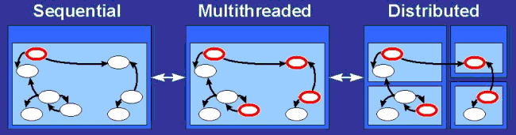
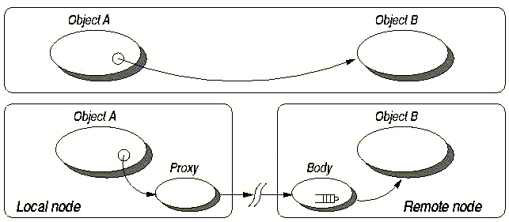

Les Grilles sont construites sur une base logicielle de type Middleware (ou intergiciel), i.e. interface entre les OS et les applications.
Les intergiciels pour Grilles permettent de déployer une large classe d'applications distribuées (≠ applications dédiées comme SETI@Home) et proposent un modèle de programmation.
Quelques projets caractéristiques :
Les intergiciels pour grilles fournissent souvent des fonctionnalités supplémentaires: des services répondant aux besoins des tuilisateurs de grilles.
OGSA propose d'utiliser les recommandations existantes du W3C : XML, SOAP, WSDL, UDDI, ....
DIET est une plate-forme hiérarchique développée à l'INRIA. Elle est orientée Application Service Provider (ASP) et son modèle de programmation est Grid-RPC. Elle permet à des clients de soumettre une requête prise en charge par un serveur de la plate-forme.
Cet intergiciel peut être rangé dans la catégorie des Network Enabled Servers (NES). (Ninf, Netsolve, ...)
Problématiques:
ProActive est un projet INRIA, Nice.
Objectifs: développer une librarie permettant le développement d'applications
sur Grille.
Caractéristiques:
Idée forte: accès transparent aux objets pour le programmeur.

Les objets actifs implémentent les accès à distance de
manière transparente.

ClasseC {
...
public float calcul(...);
...
}
...
A.calcul(); // calcul peut être
// exécuté à distance
Création d'un objet actif avec ProActive.newactive().
Classe a;
Object[] params = new Object[] { new Integer (26), "astring" };
try {
a = (Classe) ProActive.newActive("example.Classe", params);
} catch (ActiveObjectCreationException e) {
e.printStackTrace();
}
L'appel à une méthode de a provoque la copie par valeur des paramètres et la requête est mise dans la file d'attente de a.
Ici, a est créé dans la JVM d'origine (locale).
Création d'un objet actif distant.
a = (Classe) ProActive.newActive("example.Classe",
params, "rmi://pluto.inria.fr/aNode");
//ou
Node node = NodeFactory.getNode("rmi://pluto.inria.fr/aNode");
a = (Classe) ProActive.newActive("example.Classe", params, node);
Note: on peut "rendre actif" un objet ordinaire après sa création avec turnActive().
Classe a = new Classe (26, "astring");
....
a = (Classe) ProActive.turnActive(a,node);
Placement des objets actifs sur un
Node, élément d'un VirtualNode.
Un descripteur de déploiement donne :
Créé un noeud appelé Dispatcher qui sera placé dans la JVM jvm1.
<ProActiveDescriptor
xmlns:xsi="http://www.w3.org/2001/XMLSchema-instance"
xsi:noNamespaceSchemaLocation="DescriptorSchema.xsd">
<componentDefinition>
<virtualNodesDefinition>
<virtualNode name="Dispatcher"/>
</virtualNodesDefinition>
<componentDefinition/>
<deployment>
<mapping>
<map virtualNode="Dispatcher">
<jvmSet>
<vmName value="jvm1"/>
</jvmSet>
</map>
</mapping>
<jvm name="jvm1">
<creation>
<processReference refid="jvmProcess"/> (décrit dans la partie infrastructure)
</creation>
</jvm>
</deployment>
</ProActiveDescriptor>
Extrait de code typique:
ProActiveDescriptor pad = ProActive.getProactiveDescriptor(String xmlFile);
//--------- Returns a ProActiveDescriptor object from the xml file
VirtualNode dispatcher = pad.getVirtualNode("Dispatcher");
//-------- Returns the VirtualNode Dispatcher described in the xml file as a java object
dispatcher.activate();
// -------- Activates the VirtualNode
Node node = dispatcher.getNode();
Un VirtualNode peut regrouper plusieurs JVM.
Une JVM peut héberger, un ou plusieurs Nodes.
Dans le cas d'un cluster, on associe généralement n JVM avec nNodes.
Le détail des possibilités de configuration: [ html ].
Les méthodes les plus utilisées pour la gestion de groupe sont fournies par la classe ProActiveGroup. Ces groupes sont typés (éléments de même classe ou plus abstraits).
Par exemple, pour la création d'un groupe:
Classe ag = (Classe) ProActiveGroup.newGroup("Classe", params[],
{rmi://globus1.inria.fr/Node1,
rmi://globus2.inria.fr/Node2});
Les groupes permettent de déclencher des appels de méthode en parallèle.
Soit la classe C:
class C {
R calcul(P p) { ... }
...
}
On peut former un groupe G d'objets actifs de type C, et invoquer la méthode calcul() sur chaque élément du groupe (map).
C groupeDeC = (G) ProActiveGroup.newGroup("C",params,nodes);
P p;
R r = groupeDeC.calcul( p );
Autant d'appels asynchrones calcul() sont déclenchés qu'il n'y a d'éléments dans groupeDeC.
Les groupes permettent les communications collectives.
C groupeDeC = (G) ProActiveGroup.newGroup("C",{o1,o2,o3},nodes);
R r = groupeDeC.calcul( p );
r.uneMethodeDeR();
Les 3 appels à uneMethodeDeR() seront effectués au fur et à mesure que r se remplit.
On peut exprimer une synchronisation totale:
ProActive.waitForAll(r);ou parrtielle:
R tmp = ProActive.getOne( r ); tmp.uneMethodeDeR();
| static void | waitAll(java.lang.Object o) | attend que tous les résultats soient arrivés. |
| static java.lang.Object | waitAndGetOne(java.lang.Object o) | Waits for one future is arrived and get it. |
| static java.lang.Object | waitAndGetOneThenRemoveIt(java.lang.Object o) | attend l'arrivée d'un résultat et retourne ce résultat. |
| static java.lang.Object | waitAndGetTheNth(java.lang.Object o, int n) | Waits for the N-th future is arrived and get it. |
| static void | waitN(java.lang.Object o, int n) | Waits n futures are arrived. |
| static void | waitOne(java.lang.Object o) | Waits for (at least) one future is arrived. |
| static int | waitOneAndGetIndex(java.lang.Object o) | Waits that at least one member is arrived and returns its index. |
| static void | waitTheNth(java.lang.Object o, int n) | Waitd for the N-th future in the list is arrived. |
Les groupes permettent les communications collectives.
Quand un groupe est passé en argument d'une méthode appliquée sur groupe, le paramètre est diffusé à tous les objets actifs du groupe.
G g = (G) ProActiveGroup.newGroup("G",params,nodes);
Data mydata = (Data) ProActiveGroup.newGroup("Data",{data1,data2,data3},nodes);
g.calcul(mydata); // chaque élem. de g recoit mydata en entier
Au lieu
G g = (G) ProActiveGroup.newGroup("G",params,nodes);
Data mydata = (Data) ProActiveGroup.newGroup("Data",{data1,data2,data3},nodes);
ProActiveGroup.setScatterGroup( mydata );
g.calcul( mydata ); // chaque élem. de g recoit un objet de mydata